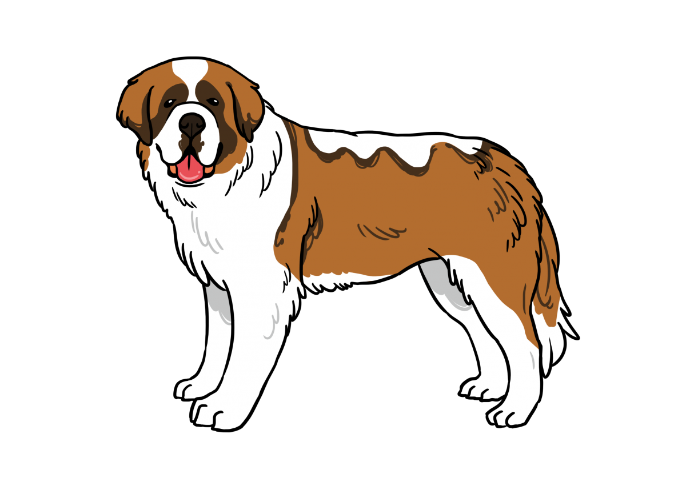
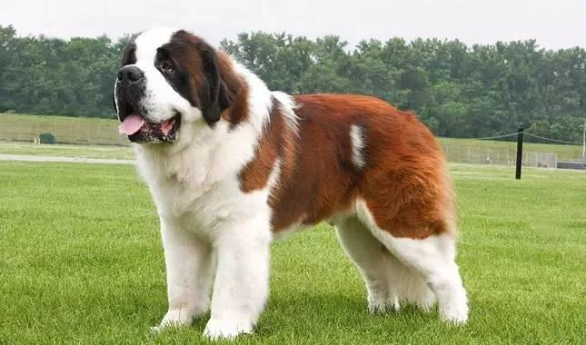

聖伯納犬

外表
聖伯納犬是一種體型巨大，身軀強壯且頭型稍大的狗兒，身高61～71公分，體重約50～91公斤左右，屬於大型犬。一般毛色以紅色、白色、棕色、黑色比較常見，身上毛色較雜有斑點。
性格
此類犬個性相當溫和，且溫馴。對於飼養牠的主人很聽話，不隨便攻擊人。可訓練為救難犬。
歷史
聖伯納犬生活在大聖伯納的中世紀奧古斯丁拯救收容所裡。這些修士以前的慈悲心腸廣爲流傳，是瑞士的一個傳奇。過往的聖伯納犬，就是由這些奧古斯丁修道士養殖於該處的阿爾卑斯隘口，開始時，這些聖伯納犬只用於運載補給品，後來則發展爲雪崩搜救狗。當中最出名的傳奇，是一條名爲巴利(Barry)的聖伯納犬，它曾經救過四十多人的性命。現在，飼養聖伯納犬的主要地點，已經不再是中世紀奧古斯丁拯救收容院了。但是，在夏天，人們仍然可以在大聖伯納德看到聖伯納犬。
飼養注意事項
食量及運動量都非常大，需確定有足夠的飼養空間和伙食經費
成長發育非常快，尤其注意鈣質適當補充和體重控制
氣溫高、濕度大的台灣氣候並不大適合牠，要特別注意溫度調節
容易有遺傳性髖關節發育不全及退化性關節炎疾病
